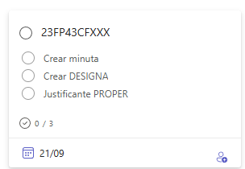

Gestió ERESAR
Introducció¶
Algunes formacions realitzades en cursos anteriors han tingut problemes en el pagament per diferents motius. Normalment els motius són que no han estat correctament justificats els pagaments perquè el pagament no s’ajustava a la normativa de tarifes vigent en el moment de realitzar el curs o perquè no s’han aportat correctament els documents necessaris per a justificar el pagament.
ATENCIÓ
És molt important que es seguisquen les instruccions que s’indiquen en aquest document per a evitar problemes en el pagament dels ponents i tutors de la formació en les formacions. Cal tindre sentit comú i aplicar el principi de prudència en la gestió dels recursos públics. Hem de partir de la base que tot pagament realitzat s’ha de fer segons la normativa vigent i que s’ha de justificar documentalment.
IMPORTANT
Tota la documentació que veurem en aquest document es troba en la CARPETA ERESAR del CEFIRE de FP.
Distribució de formacions¶
Totes les formacions s’han distribuït en el següent document.
Cal tindre en compte:
- Es treballarà per parelles d’assessors donant suport l’u a l’altre
- L’assessor assignat 1 serà el responsable de la gestió i coordinació de l’informe
- Els assessors podran ser reassignats en funció de les necessitats de la formació o de la càrrega de treball
Tasques a realitzar¶
Les tasques a realitzar son les següents:
-
Comprovar les tarifes del curs.- Comprovar si la Minuta o Factura del curs s'adapten a les tarifes. Dins de la CARPETA ERESAR del CEFIRE de FP podem trobar dues carpetes on estan les Minutes o les Factures (aquesta distribució s’ha realitzat analitzant les formacions i les possibilitats de pagament de les mateixes).
-
Preparar la documentació.- Preparar la documentació per a que el curs es puga pagar. Hi ha que tindre en compte que el procediment a seguir serà diferent si el curs es paga per Minuta o per Factura.
Factura o Minuta?
Si el curs s'ha de pagar per Factura, el procediment és molt més tediòs i llarg (el ponent tarda més en cobrar). Per tant, en el moment de gestionar el pagament de un curs, si hi ha possibilitat de que el ponent ens canvie la factura per la minuta, serà millor ja que el ponent cobrarà abans i haurem de fer menys paperassa.
Comprovar la tarifa¶
Per a comprovar la tarifa del curs hem de vore que el que s'ha introduït en Gesform i els documents de pagament (Factura o Minuta) estan acorde en les tarifes vigents del moment de la formació.
Per a això entrem en les carpetes de MINUTA o FACTURA i busquem mitjançant el codi del curs, la minuta o factura corresponen del curs. Després entrem en GESFORM y comprovem que el presupost coincideix en la MINUTA o FACTURA.
POSAR CAPTURA DE PANTALLA DEL GESFORM
Finalment comprovem si el import coincideix amb el tarifari normatiu segons la data en que es va realitzar el curs.
Hi ha que tindre en compte el tipus de formació (síncrona, a distància, elaboració de materials, etc.) i quina normativa se li aplica.
| Data |
|---|
| Entre el 15/09/2020 i el 31/12/23 |
| A partir del 26/02/2024 |
| A partir del 01/09/24 |
| A partir del 01/10/24 |
- Si la formació s’ha realitzat entre el 15 de desembre de 2020 i el 31 de desembre de 2023 s’aplica la següent tarifació.
| Modalitat | Tipus | Tarifa | Observacions |
|---|---|---|---|
| SÍNCRONA | Amb elaboració de materials | 65 €/hora | Només primera edició. Cessió i citació d’autoria obligatòria. |
| SÍNCRONA | Sense elaboració o cessió de materials | 55 €/hora | |
| ASÍNCRONA | Tutoria amb elaboració de materials (≤30 part.) | 55 €/hora | Només primera edició. Cessió i citació d’autoria obligatòria. |
| ASÍNCRONA | Tutoria amb elaboració de materials (>30 part.) | 65 €/hora | |
| ASÍNCRONA | Tutoria sense elaboració de materials (≤30 part.) | 45 €/hora | |
| ASÍNCRONA | Tutoria sense elaboració de materials (>30 part.) | 55 €/hora | |
| ASÍNCRONA | Elaboració de materials sense tutoria | 15 €/hora | Cessió de materials. Citació d’autoria obligatòria per a altres usos. |
- Si la formació s’ha realitzat des del 26 de febrer de 2024 s’aplica la següent tarifació que resumim en la taula següent:
| Modalitat | Tipus | Tarifa | Observacions |
|---|---|---|---|
| SÍNCRONA | Presencial o mediada per tecnologia | 84 €/hora | Inclou elaboració de materials per a la docència, si escau. |
| A DISTÀNCIA | Professor/a (crea material i tutoritza el curs) | 84 €/hora | |
| A DISTÀNCIA | Tutor/a (material existent, atén 30-45 participants) | 45 €/h (parcial) | En cursos de 30h: la coletilla 45€/participant no s’aplica. Es cobra el curs complet per hores. |
| A DISTÀNCIA | Tutor/a (curs de 20h) | 30 €/participant | |
| A DISTÀNCIA | Tutor/a (curs de 40h) | 60 €/participant | |
| ELABORACIÓ | Material (persona diferent del professor/a del curs) | 17 €/hora | Cessió d’ús dels materials del curs a l’administració per escrit. |
- A partir de setembre de 2024 s’aplicarà la següent tarifació que resumim en la taula següent:
| Modalitat | Tipus | Tarifa | Observacions |
|---|---|---|---|
| FORMACIÓ SÍNCRONA | Presencial o mediada per tecnologia | 67 €/hora | Inclou elaboració de materials per a la docència. |
| FORMACIÓ A DISTÀNCIA - Tutoria | Curs de 30 hores, atenció a 30-50 participants | 40 €/hora | Màxim de 1.200 € per curs. No es cobra per certificat. |
| FORMACIÓ A DISTÀNCIA - Tutoria | Altres tutories, atenció 30-45 participants | 42 €/hora | Màxim de 2.200 €. |
| ELABORACIÓ DE MATERIALS | Per a curs de 20 hores | 475 € | Autor/a signa cessió d’ús a la Subdirecció General. Proporcional: 47,5€/h |
| ELABORACIÓ DE MATERIALS | Per a curs de 30 hores | 600 € | Proporcional: 47,5€/h |
| ELABORACIÓ DE MATERIALS | Per a curs superior a 30 hores | 900 € |
- A partir d’octubre de 2024 s’aplicarà la següent tarifació que resumim en la taula següent:
| Modalitat | Tipus | Tarifa | Observacions |
|---|---|---|---|
| FORMACIÓ SÍNCRONA | Presencial o mediada per tecnologia | 67 €/hora | Inclou elaboració de materials per a la docència, si escau. |
| FORMACIÓ A DISTÀNCIA - Tutoria | Tutoria, atenció a 30-50 participants | 42 €/hora | Màxim de 2.200 €. En tutories híbrides, aplicar tarifes segons modalitat. |
| ELABORACIÓ DE MATERIALS | Fins a 20 hores | 23,75 €/h | Màxim de 475 €. Cessió d’ús a la Subdirecció General. |
| ELABORACIÓ DE MATERIALS | Entre 21 i 30 hores | 20 €/h | Màxim de 600 €. |
| ELABORACIÓ DE MATERIALS | Superior a 30 hores | 900 € |
⚠️ És possible que algunes formacions no coincidisquen exactament amb les tarifes indicades en les taules anteriors. És possible que estigueren aprovades quan estava vigent una normativa anterior.
En el cas de que les tarifes Minuta-Factura-Gesform VS Tarifes no coincidisquen s’intentarà aplicar la tarifació normativa que més s’aproxime a la formació realitzada o que menys dificultats tinga la seua justificació documental i ens possarem en contacte amb el ponent per a que rectifique la factura o minuta.
Minutes. Passos a seguir¶
Vos recomanem seguir els passos següents per a realitzar el pagament de les formacions. Podem seguir el procediment en el full de càlcul que podeu trobar en la CARPETA ERESAR del CEFIRE de FP.
Dins del full de càlcul podem trobar les columnes següents:

Que podem resumir de la manera següent:
- Comprovar si la tarifa del curs es correcta en funció del tipus de formació (síncrona, a distància, elaboració de materials, etc.) i quina normativa se li aplica. Hem de conéixer l’estat de la formació en Gesform. Haurem de veure en pressupost què és el que s’ha de pagar.
- Si la tarifa no s'ajusta a la normativa vigent, haurem de contactar amb el ponent per a explicar-li la nova situació i comunicar-li el nou import per a poder tirar avant amb la tramitació del pagament.
- Al mateix temps, dir-li al ponent que es done d'alta en el proper. Enllaç a PROPER
- Contactar amb Elena perquè ens prepare la "nova" minuta. En aquest cas haurem de crear una targeta en el Kanban d’ERESAR i etiquetar Elena i Alfredo amb el codi de la formació i tasca “Crear minuta”.
 - Després, una vegada estiga realitzada la minuta i revisada per Elena, s’haurà de realitzar el DESIGNA i el CERTIFICA de la mateixa manera que es realitzen la resta de DESIGNES, respectant les dates i detallant els conceptes de la minuta.
- Per últim, haurem d'omplir el document de "Conformitat de realització de la formació" que el podem trobar ací, i el guardarem en la carpeta de la formació.
IMPORTANT
Tota la documentació ha de tindre el codi de la formació per a poder identificar-la correctament. Per exemple:
24FP01CF011_DESIGNA_NOM.pdf, 24FP01CF011_MINUTA_NOM.pdf, 24FP01CF011_FACTURA_NOM.pdf, 24FP01CF011_INFORME_ERESAR_NOM.pdf, etc.
Cas de passar de Factura a Minuta¶
En el cas de que el ponent haja acceptat passar de Factura a Minuta, s'haurà d'emplenar el següent document que tindrà que ser signat digitalment per el ponent.
[Nom del ponent]
[Adreça]
[Correu electrònic]
[Telèfon]
[Data]
Benvolguts senyors:
Per mitjà d’aquesta, desitge comunicar formalment que renuncie al cobrament mitjançant factura pels meus serveis com a ponent en [indicar esdeveniment, curs o formació], i preferisc que el pagament es realitze a través de minuta.
Aquesta decisió respon a una qüestió administrativa/comptable (opcional: especificar motiu si es desitja), amb la finalitat de facilitar els tràmits i agilitzar el cobrament corresponent.
Agraïsc l’atenció prestada i quede a disposició per a qualsevol consulta o tràmit addicional que siga necessari.
Atentament,
[Nom complet]
[Firma electrònica]
Factures. Passos a seguir¶
Vos recomanem seguir els passos següents per a realitzar el pagament de les formacions. Podem seguir el procediment en el full de càlcul que podeu trobar en la CARPETA ERESAR del CEFIRE de FP.
Dins del full de càlcul podem trobar les columnes següents:
Que podem resumir de la manera següent:
- Comprovar si la tarifa del curs es correcta en funció del tipus de formació (síncrona, a distància, elaboració de materials, etc.) i quina normativa se li aplica. Hem de conéixer l’estat de la formació en Gesform. Haurem de veure en pressupost què és el que s’ha de pagar.
- Si no tenim/trobem la factura en la carpetes de FACTURA haurem de demanr-li-la al ponent.
-
Si el import de la factura no s'ajusta a la tarifa de la normativa vigent, haurem de contactar amb el ponent per a explicar-li la nova situació i comunicar-li el nou import, després per a poder tirar avant amb la tramitació del pagament dir-i que ens ha de fer la factura de nou atenent a la normativa i el nou import. Les factures hauran de contindre:
- Dades de l’empresa
- Dades del CEFIRE
- Dades del curs: CODI i NOM
- Import brut (Sense IRPF ni IVA)
- Import total
- Nombre total d’hores de la formació
- Nombre de participants
- Dates de realització de la formació
- Família professional
- IVA corresponent: s’ha d’afegir la coletilla “Factura exempta d’IVA segons art. 20.1.9 de la llei 37-1992 de 28 de desembre” si l’empresa està exempta d’IVA.
- Número de compte bancari on s’ha de realitzar el pagament.
- A més ha de detallar-se adequadament els conceptes segons tarifa. En cas que s’haja de fer algun ajust, es pot afegir la coletilla:
- Materials didàctics necessaris per a la realització de la formació. Materials didàctics (ha de tindre part en Aules). Si són materials, s’ha de detallar el material mínimament i ha de tindre IVA. Una altra possibilitat és afegir factura de dieta per a quadrar la factura però només desplaçament. Dues factures: una d’indemnització per desplaçament. Sempre que hi haja factura amb dieta, intentar que siga independent. Si hi ha materials ha de contindre IVA. Exemple de text per a la factura:
Indemnització per desplaçament per a la impartició a València de la formació amb codi 24FP96PD100" i detall Morella-València a 0,19 €/km x 2 viatges x 100 km = 38 €
- Materials didàctics necessaris per a la realització de la formació. Materials didàctics (ha de tindre part en Aules). Si són materials, s’ha de detallar el material mínimament i ha de tindre IVA. Una altra possibilitat és afegir factura de dieta per a quadrar la factura però només desplaçament. Dues factures: una d’indemnització per desplaçament. Sempre que hi haja factura amb dieta, intentar que siga independent. Si hi ha materials ha de contindre IVA. Exemple de text per a la factura:
-
Una vegada tinga'm la factura o bé modificada o l'original, li direm al ponent que ha de pujar la factura al FACE. !!!warning "Atenció - Alta en FACE" Heu de tenir en compte que les factures han d'estar donades d'alta en FACE, per tant, l'empresa suministradora serà l'encarregada de donar d'alta la factura en el sistema. El sistema FACE és un sistema de gestió de factures electròniques que permet a les empreses presentar les seues factures a l'administració pública de manera electrònica. Se li pot facilitar la següent documentació a la empresa: Documentació per a l'empresa FACe
-
Després haurem de fer l'informe ERESAR. L’Informe ERESAR és un document que s’ha de realitzar per a justificar la formació. Es tracta d’un document que ha de justificar per què no s’ha pogut pagar la formació, per la qual cosa haurem de ser creatius i justificar bé la formació sent el més eloqüents possibles però sempre ajustant-nos a la realitat. Podem trobar una plantilla de l’Informe ERESAR ací. Cal llegir bé la plantilla i emplenar-la adequadament. L’informe s’ha de pujar a la carpeta de la formació.
-
Finalment es crearà una targeta en el Kanban d’ERESAR i s'etiquetarà a Alfredo quan estiguen totes les tasques de la targeta fetes. La targeta tindrà el nom del codi de la formació i les tasques següents:

IMPORTANT
Aquesta és la part més delicada de totes, ja que la factura ha de quadrar amb algun tipus de tarifació, és possible que calga negociar amb l’empresa perquè es reduïsca l’import. El més fàcil és passar la factura a minuta ja que es cobrarà més ràpidament i no hi haurà problemes amb la factura. En cas que no es puga passar a minuta, s’haurà de justificar molt bé la factura en l’Informe ERESAR.